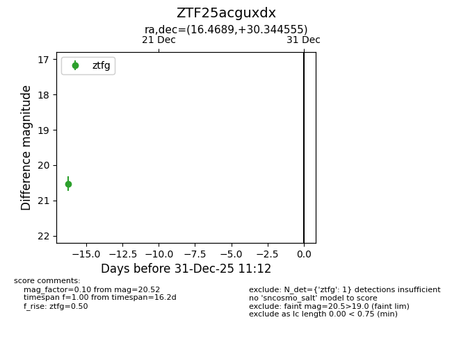
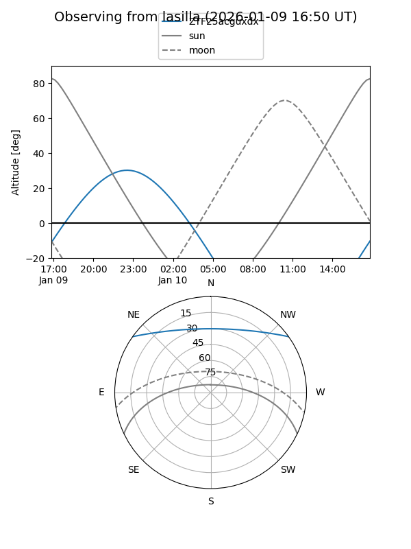
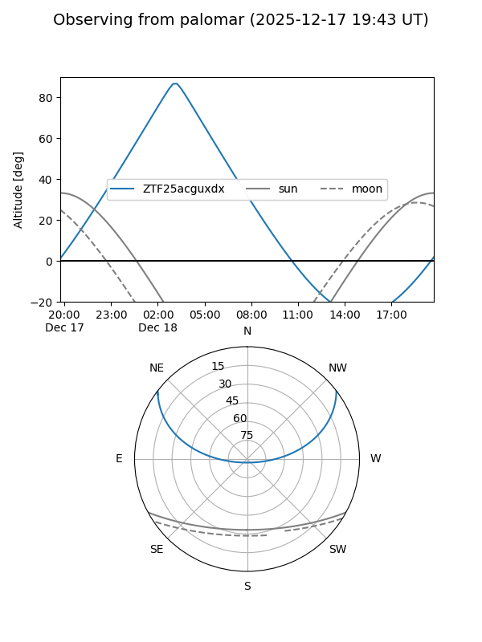

ZTF25acguxdx
Target ZTF25acguxdx at 2025-12-31 18:00
Aliases and brokers:
FINK: link
Lasair: link
ALeRCE: link
alt names
ZTF25acguxdx (ztf,fink_ztf)
Coordinates:
equatorial (ra, dec) = 16.4689,+30.34455
equatorial (HMS+DMS) = 01:05:52.54,+30:20:40.40
galactic (l, b) = (126.6223,-32.42372)
Flags:
Photometry:
last ztfg=20.52
1 ztfg detections
Lightcurve

Visibility


Additional plots